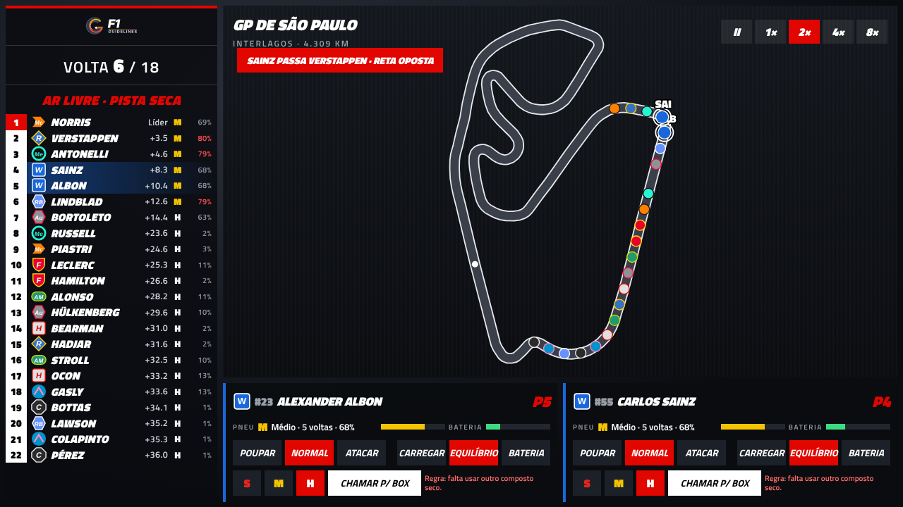
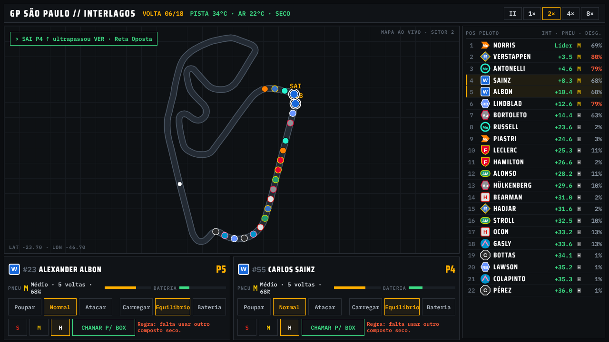
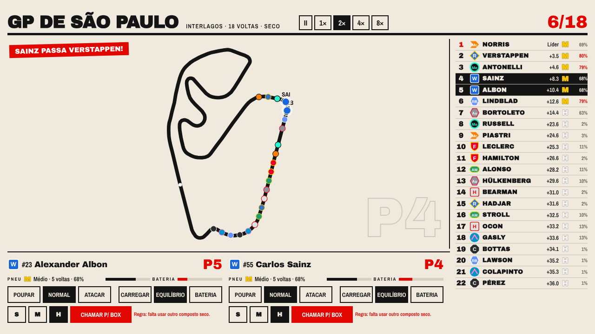
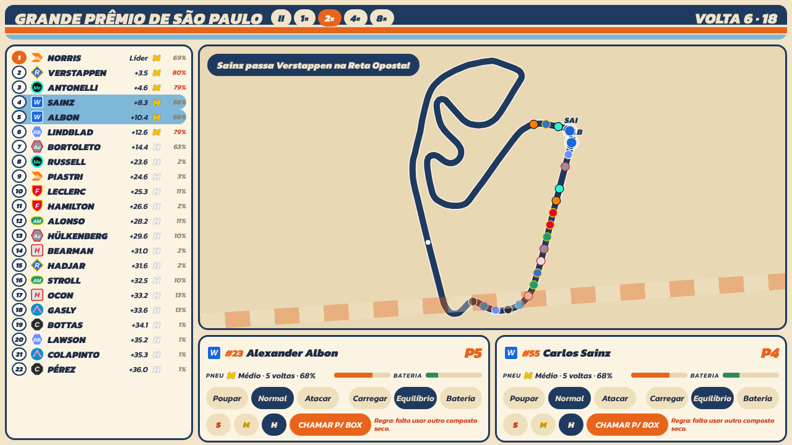
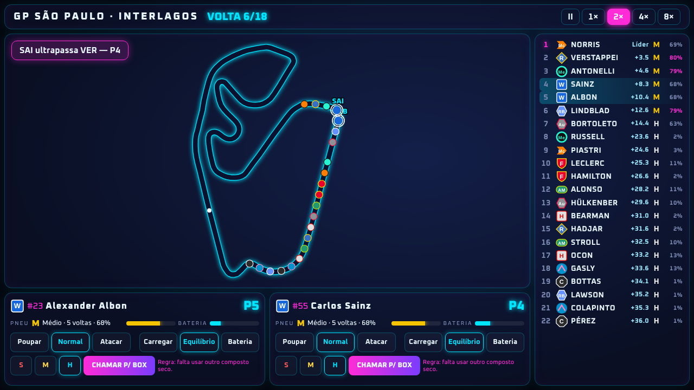
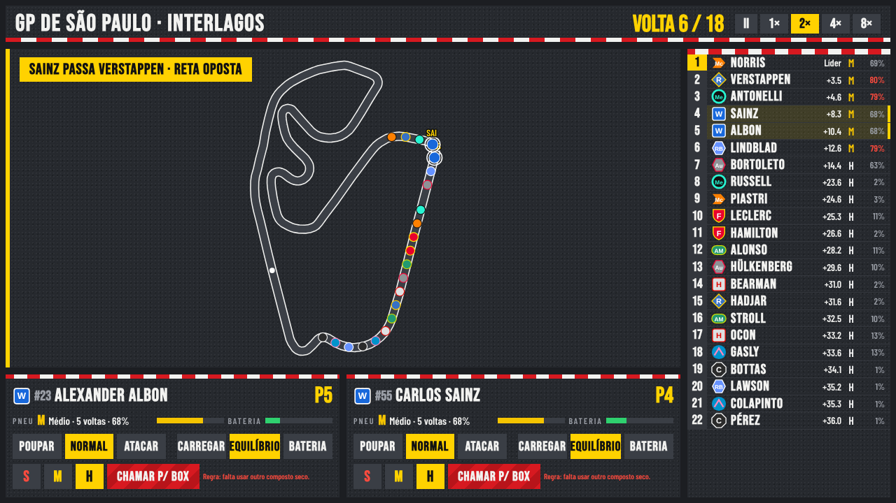
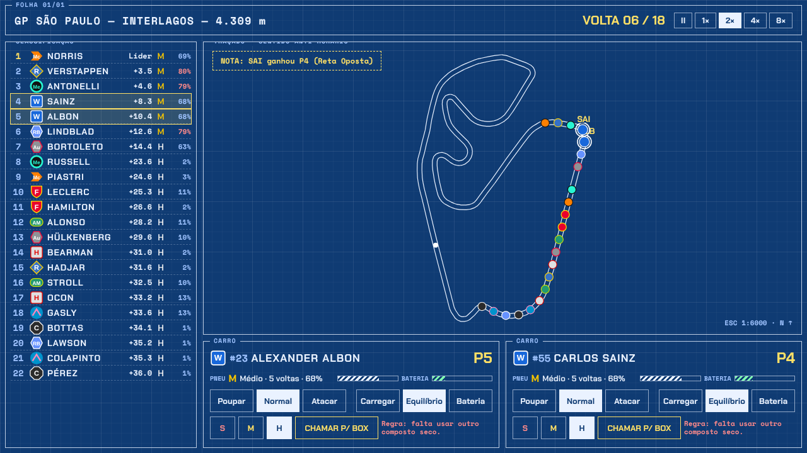
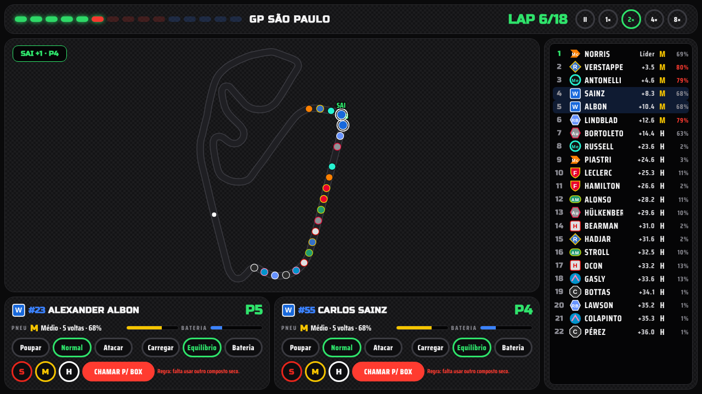

Escolhida pelo usuário: 03 · Paddock. As demais ficam como histórico da exploração.

01 · TransmissãoTorre igual à da TV: vidro preto, itálico largo, caixa vermelha do líder, status em vermelho.
02 · Pit WallMonitor de engenharia: fibra escura, fonte mono, leituras âmbar/verde, grade fina de telemetria.
03 · Paddock (revista)Editorial claro: papel, tinta preta, um vermelho de destaque, números enormes e fios grossos.
04 · Retrô 70Corrida clássica: creme, faixas laranja e azul, itálico grosso, posições em 'roundel' de carro antigo.
05 · Corrida noturnaGP noturno: azul profundo, neon ciano e magenta, painéis de vidro com brilho, pista que acende.
06 · Asfalto & ZebraTátil e esportivo: textura de asfalto, zebras vermelho/branco como divisores, faixas amarelas, letras condensadas.
07 · Prancheta de estratégiaPlanta técnica: papel azul com grade, traços brancos de desenho técnico, cotas e anotações.
08 · CockpitDisplay de volante: fibra de carbono, barra de LEDs no topo (progresso da corrida), botões redondos com aro colorido.